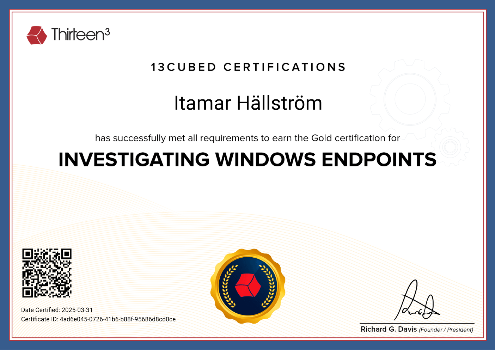

Certifications
Home
About
Blog
Projects
Certifications
Contact
🌙
Featured Certifications
13 Cubed — Windows Memory Forensics
Open credential ↗

13 Cubed — Windows Endpoint Forensics
Open credential ↗